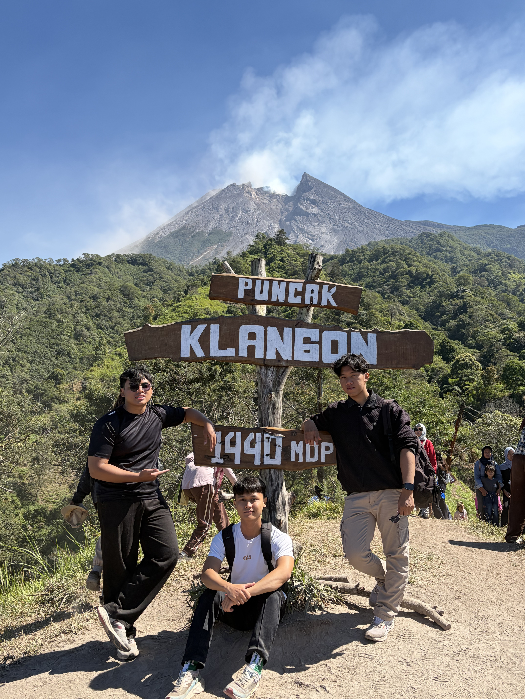

Sebelum berangkat
Rencana / Ekspektasi: Suasana tenang dan sejuk
Kenyataan: Ternyata hari libur dan tanggal merah sehingga ramai
Rencana / Ekspektasi: Suasana tenang dan sejuk
Kenyataan: Ternyata hari libur dan tanggal merah sehingga ramai
Rencana / Ekspektasi: Menikmati perjalanan dengan nyaman
Kenyataan: Jalur cukup terjal dan licin
Rencana / Ekspektasi: Memilih jalur yang berbeda (nekat)
Kenyataan: Salah arah dan hampir menuju ke Kali Talang, untungnya diarahkan kembali oleh warga
